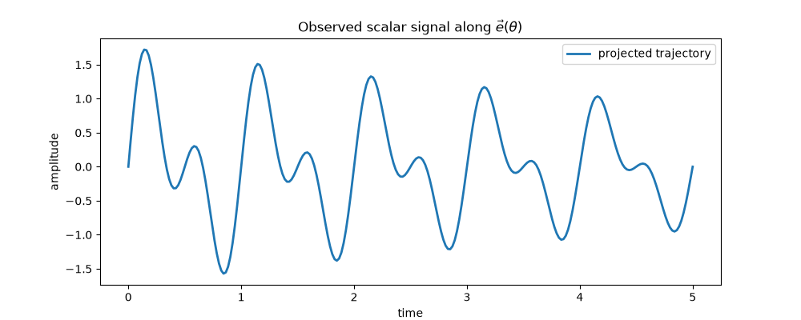
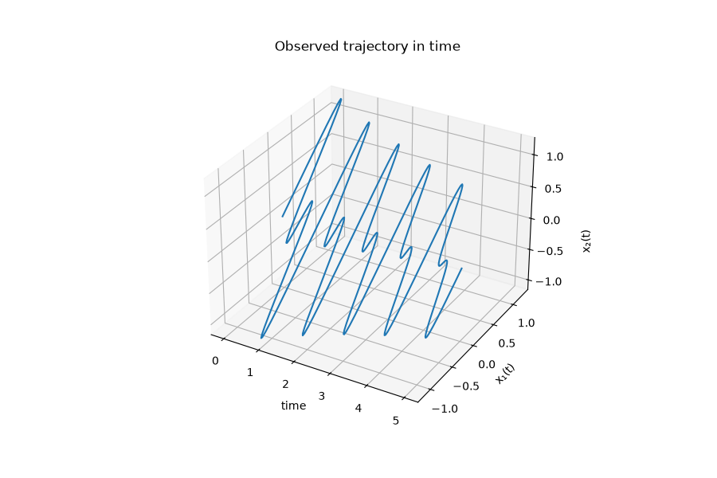
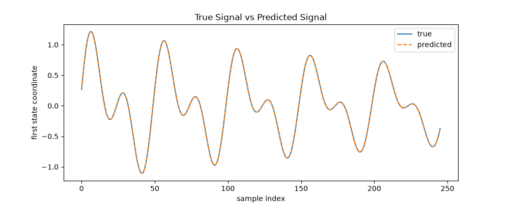
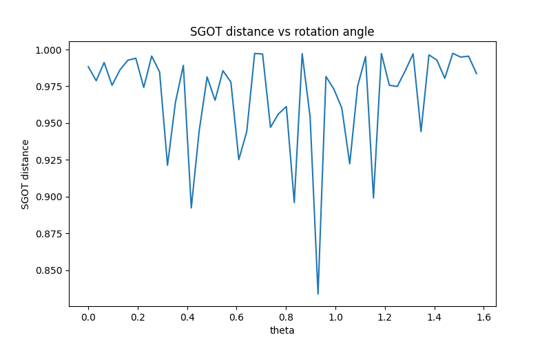
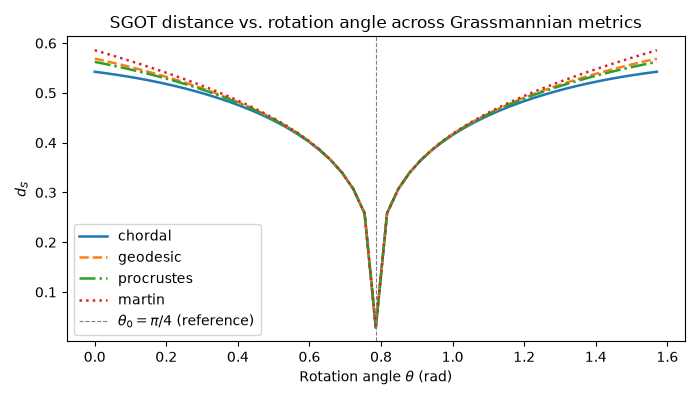
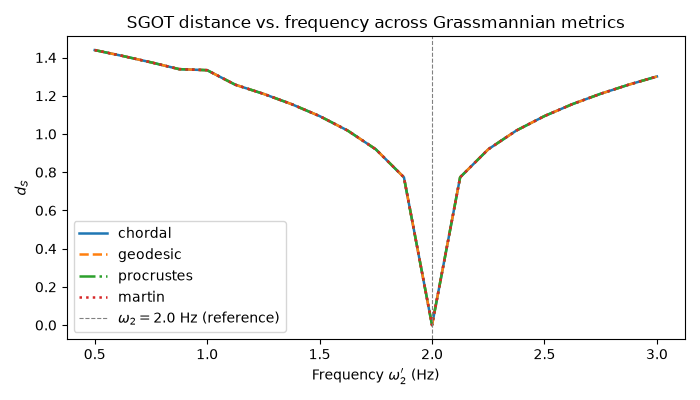
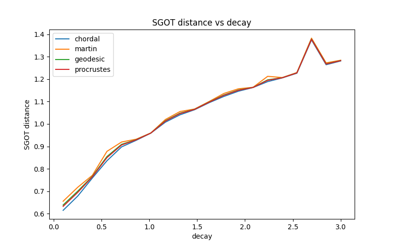

Note
Go to the end to download the full example code.
Spectral-Grassmann OT on dynamical systems operators
This example presents a synthetic example of Spectral Grassmannian-Wasserstein Optimal Transport (SGOT) on linear dynamical systems.
We consider a signal formed by the sum of two damped oscillatory modes evolving along a rotated direction in the plane. The signal is then associated with an underlying continuous linear dynamical system, and we study how its spectral representation varies under rotation. The SGOT cost and metric are used to compare the reference and rotated systems.
# Authors: Sienna O'Shea
# Thibaut Germain
#
# License: MIT License
import numpy as np
import matplotlib.pyplot as plt
from ot.sgot import sgot_metric, sgot_cost_matrix
from scipy.linalg import eig
# sampling parameters and time grid
fs = 50
max_t = 5
time = np.linspace(0, max_t, fs * max_t)
dt = 1 / fs
Example: rotating a linear dynamical system in 3D
1. Build a simple observed signal
We begin by assuming that the observed signal is made of two oscillatory components:
where \(\vec e(\theta)\in\mathbb{R}^2\) is a fixed real vector. Thus, \(x(t)\) evolves along the one-dimensional subspace spanned by \(\vec e(\theta)\), while its time dependence exhibits oscillatory and dissipative behaviour.
tau_0 = np.array([0.08, 0.18])
freq_0 = np.array([1.0, 2.0])
theta_0 = np.pi / 4
def generate_data(time, tau, freq, theta):
t_ = np.sin(2 * np.pi * freq[None, :] * time[:, None]) * np.exp(
-tau[None, :] * time[:, None]
)
t_ = t_.sum(axis=1)
traj_0 = np.zeros((t_.shape[0], 2))
traj_0[:, 0] = t_
rotation_matrix = np.array(
[[np.cos(theta), -np.sin(theta)], [np.sin(theta), np.cos(theta)]]
)
traj_0 = traj_0 @ rotation_matrix.T
return traj_0
traj_0 = generate_data(time, tau_0, freq_0, theta_0)
# plot the observed signal components and their sum
plt.figure(figsize=(10, 4))
plt.plot(time, traj_0, label="base trajectory", linewidth=2)
plt.xlabel("time")
plt.ylabel("amplitude")
plt.legend()
plt.title(r"Observed scalar signal along $\vec{e}(\theta)$")
plt.show()

2. Interpret the signal as coming from a continuous linear dynamical system
We assume that \(x(t)\) is generated by an underlying continuous linear dynamical system. Since the observed signal is a superposition of two sinusoidal modes, the corresponding linear dynamics are naturally described by a fourth-order model. We therefore introduce the state vector
where \(x^{(n)}(t)\) denotes the n-th derivative of \(x(t)\).
This allows us to rewrite the dynamics as a first-order linear system:
where \(A\in\mathbb{R}^{8\times 8}\). Its solution is then given by
fig = plt.figure(figsize=(9, 6))
ax = fig.add_subplot(projection="3d")
ax.plot(time, traj_0[:, 0], traj_0[:, 1])
ax.set_xlabel("time")
ax.set_ylabel("x₁(t)")
ax.set_title("Observed trajectory in time")
ax.text2D(1.08, 0.5, "x₂(t)", transform=ax.transAxes, rotation=90, va="center")
plt.show()

3. Sampling and preprocessing discrete trajectories of the dynamical system
We now have a bridge between the continuous system and the operator we later aim to infer from sampled data. Since in practice we do not observe the full continuous trajectory, we work instead with discrete samples of the signal. We take snapshots at uniform time intervals \(\Delta t\), and write the sampled signal as
The goal is now to use these observations to recover the operator governing the evolution. To do this, we augment the signal \(s\) using a sliding window of length \(w\). For each \(k\), define
We then form the data matrices
so that \(X\) contains the present windowed states and \(Y\) the corresponding shifted future states.
# build a 4-dimensional state using delay embedding
def augment(traj, window_length=2):
Z = np.lib.stride_tricks.sliding_window_view(traj, (window_length, 1))
Z = Z.reshape(Z.shape[0], -1)
return Z
# create the embedded state matrix Z
Z = augment(traj_0, 4)
Z.shape
# inspect one embedded state vector
Z[0]
# create X and Y for the SGOT metric
X = Z[:-1]
Y = Z[1:]
# inspect shapes of X and Y
print("X shape:", X.shape)
print("Y shape:", Y.shape)
X shape: (246, 8)
Y shape: (246, 8)
4. Estimate the discrete-time operator
We now identify the operator that maps \(X\) to \(Y\). From
we have
Setting
the corresponding discrete-time evolution is governed by \(B\), and we seek the best linear map satisfying
Equivalently, we solve the optimisation problem
We want to recover the best rank-\(r\) operator, whose estimator is defined as follows:
Here \([\cdot]_r\) denotes the best rank-\(r\) estimator obtained via SVD decomposition. [2]
[2] Kostic, V., Novelli, P., Maurer, A., Ciliberto, C., Rosasco, L. and Pontil, M., 2022. Learning dynamical systems via Koopman operator regression in reproducing kernel Hilbert spaces. Advances in Neural Information Processing Systems, 35, pp.4017-4031.
def estimator(X, Y, rank=4):
# X: (n_samples, n_features)
# Y: (n_samples, n_features)
# estimate operator
cxx = X.T @ X
U, S, Vt = np.linalg.svd(cxx)
S_inv = np.divide(1, S, out=np.zeros_like(S), where=S != 0)
cxx_inv_half = Vt.T @ np.diag(np.sqrt(S_inv)) @ U.T
cxy = X.T @ Y
T = cxx_inv_half @ cxy
U, S, Vt = np.linalg.svd(T)
S[rank:] = 0
T_rank = U @ np.diag(S) @ Vt
T = cxx_inv_half @ T_rank
# estimate spectral decomposition
val, vl, vr = eig(T, left=True, right=True)
sort_idx = np.argsort(np.abs(val))[::-1]
val = val[sort_idx][:rank]
vl = vl[:, sort_idx][:, :rank]
vr = vr[:, sort_idx][:, :rank]
return T, {"eig_val": val, "eig_vec_left": vl, "eig_vec_right": vr}
B_0, B_0_spec = estimator(X, Y, rank=4)
Y_pred = X @ B_0
plt.figure(figsize=(10, 4))
plt.plot(Y[:, 0], label="true")
plt.plot(Y_pred[:, 0], "--", label="predicted")
plt.xlabel("sample index")
plt.ylabel("first state coordinate")
plt.title("True Signal vs Predicted Signal")
plt.legend()
plt.show()

The predicted signal is nearly indistinguishable from the true signal, indicating that the estimated operator accurately captures the observed dynamics.
6. Recover continuous-time spectral information from the discrete operator
To recover the continuous generator \(A\), we study the spectral structure of \(B\). We diagonalise \(B\) as
where
The continuous-time eigenvalues are of the form
and the corresponding eigenvalues of \(B\) are
Since \(B=e^{\Delta tA}\), we recover \(A\) by taking the logarithm:
D_0 = np.log(B_0_spec["eig_val"]) * fs
L_0 = B_0_spec["eig_vec_left"]
R_0 = B_0_spec["eig_vec_right"]
recovered_freqs = D_0.imag / (2 * np.pi)
mask = recovered_freqs > 0
recovered_freqs = recovered_freqs[mask]
decay = -D_0.real[mask]
print(f"First mode: frequency: {recovered_freqs[0]:.2f} Hz -- decay: {decay[0]:.2f}")
print(f"Second mode: frequency: {recovered_freqs[1]:.2f} Hz -- decay: {decay[1]:.2f}")
First mode: frequency: 1.00 Hz -- decay: 0.08
Second mode: frequency: 2.01 Hz -- decay: 0.18
Introduction to SGOT for linear operators
To compare two linear operators through their spectral structure, we use the SGOT framework introduced in Theorem 1 of [1]. For a non-defective finite-rank operator \(T \in S_r(\mathcal H)\), the theorem associates a discrete spectral measure
where \(\lambda_j\) are the eigenvalues of \(T\), \(m_j\) their algebraic multiplicities, and \(\mathcal V_j\) the corresponding eigenspaces. Thus, each spectral component of the operator is represented by an atom of the form
combining one eigenvalue with its associated invariant subspace.
Theorem 1 then defines a ground cost between two such atoms by combining a spectral discrepancy and a geometric discrepancy:
where \(d_{\mathcal G}\) denotes the grassmann distance between eigenspaces and \(\eta\in(0,1)\) balances the contribution of eigenvalues and eigenspaces.
The SGOT distance between two operators \(T\) and \(T'\) is then the Wasserstein distance between their associated spectral measures:
In this way, SGOT compares linear operators by optimally matching their spectral atoms, taking into account both the location of eigenvalues and the relative geometry of their eigenspaces.
SGOT distance versus rotation angle
We compare the reference signal with a rotated version obtained by changing only the observation direction. The shifted signal is
while the reference signal is recovered at \(\theta=\theta_0\). Thus, this experiment isolates the effect of rotating the underlying one-dimensional subspace in the observation plane.
thetas = np.linspace(0, np.pi / 2, 50)
lst = []
for i, theta in enumerate(thetas):
traj = generate_data(time, tau_0, freq_0, theta)
Z = augment(traj, 4)
X = Z[:-1]
Y = Z[1:]
B, B_spec = estimator(X, Y, rank=4)
D, R, L = B_spec["eig_val"], B_spec["eig_vec_right"], B_spec["eig_vec_left"]
D = np.log(D) * fs
lst.append(sgot_metric(D_0, R_0, L_0, D, R, L, eta=0.01))
plt.figure(figsize=(8, 5))
plt.plot(thetas, lst)
plt.xlabel("theta")
plt.ylabel("SGOT distance")
plt.title("SGOT distance vs rotation angle")
plt.show()

Comparison across Grassmannian metrics for SGOT distance versus rotation angle
thetas = np.linspace(0, np.pi / 2, 50)
lst = []
for i, theta in enumerate(thetas):
traj = generate_data(time, tau_0, freq_0, theta)
Z = augment(traj, 4)
X = Z[:-1]
Y = Z[1:]
B, B_spec = estimator(X, Y, rank=4)
D, R, L = B_spec["eig_val"], B_spec["eig_vec_right"], B_spec["eig_vec_left"]
D = np.log(D) * fs
lst1 = []
for name in ["chordal", "martin", "geodesic", "procrustes"]:
lst1.append(sgot_metric(D_0, R_0, L_0, D, R, L, eta=0.9, grassmann_metric=name))
lst.append(lst1)
lst2 = np.array(lst)
plt.figure(figsize=(8, 5))
for i, name in enumerate(["chordal", "martin", "geodesic", "procrustes"]):
plt.plot(thetas, lst2[:, i], label=name)
plt.xlabel("theta")
plt.ylabel("SGOT distance")
plt.title("SGOT distance vs rotation angle")
plt.legend()
plt.show()

SGOT distance versus frequency
In this experiment, we keep the reference direction fixed and perturb one of the oscillatory modes. The shifted signal is
where only the second frequency is modified. We then study how the SGOT distance changes as a function of the perturbed frequency \(\omega_2'\).
omegas = np.linspace(0.5, 3.0, 21)
methods = ["chordal", "martin", "geodesic", "procrustes"]
scores_omega = []
theta = theta_0
eta_fixed = 0.9
for omega in omegas:
freq_1 = np.array([freq_0[0], omega])
traj = generate_data(time, tau_0, freq_1, theta)
Z = augment(traj, 4)
X = Z[:-1]
Y = Z[1:]
B, B_spec = estimator(X, Y, rank=4)
D, R, L = B_spec["eig_val"], B_spec["eig_vec_right"], B_spec["eig_vec_left"]
D = np.log(D) * fs
row = []
for name in methods:
row.append(
sgot_metric(D_0, R_0, L_0, D, R, L, eta=eta_fixed, grassmann_metric=name)
)
scores_omega.append(row)
scores_omega = np.array(scores_omega)
plt.figure(figsize=(8, 5))
for i, name in enumerate(methods):
plt.plot(omegas, scores_omega[:, i], label=name)
plt.xlabel("omega")
plt.ylabel("SGOT distance")
plt.title("SGOT distance vs omega")
plt.legend()
plt.show()

SGOT distance versus decay
We now study the effect of changing the decay rate while keeping the observation direction fixed. The shifted signal is
In this way, both modes share the same modified decay parameter \(\tau\), allowing us to isolate the influence of dissipation on the SGOT distance.
decays = np.linspace(0.1, 3.0, 20) # adjust range as needed
methods = ["chordal", "martin", "geodesic", "procrustes"]
scores_decay = []
theta = theta_0
for tau in decays:
freq_1 = np.array([freq_0[0], recovered_freqs[1]])
tau_1 = np.array([tau, tau]) # or whatever structure your generator expects
traj = generate_data(time, tau_1, freq_1, theta)
Z = augment(traj, 4)
X = Z[:-1]
Y = Z[1:]
B, B_spec = estimator(X, Y, rank=4)
D, R, L = B_spec["eig_val"], B_spec["eig_vec_right"], B_spec["eig_vec_left"]
D = np.log(D) * fs
row = []
for name in methods:
row.append(
sgot_metric(
D_0,
R_0,
L_0,
D,
R,
L,
eta=0.9, # keep eta fixed here
grassmann_metric=name,
)
)
scores_decay.append(row)
scores_decay = np.array(scores_decay)
plt.figure(figsize=(8, 5))
for i, name in enumerate(methods):
plt.plot(decays, scores_decay[:, i], label=name)
plt.xlabel("decay")
plt.ylabel("SGOT distance")
plt.title("SGOT distance vs decay")
plt.legend()
plt.show()

Total running time of the script: (0 minutes 0.987 seconds)